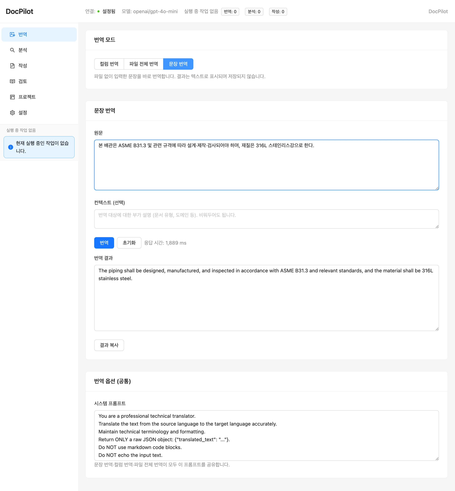
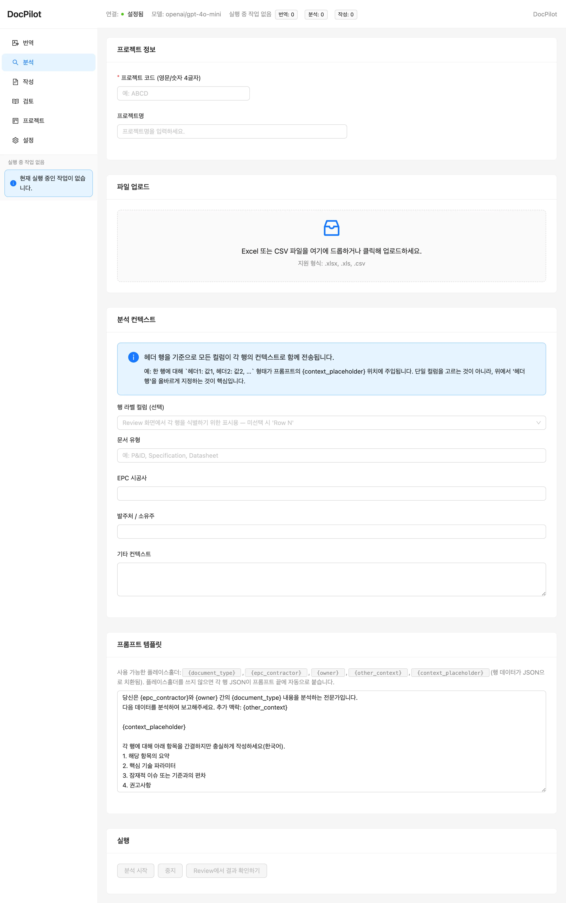
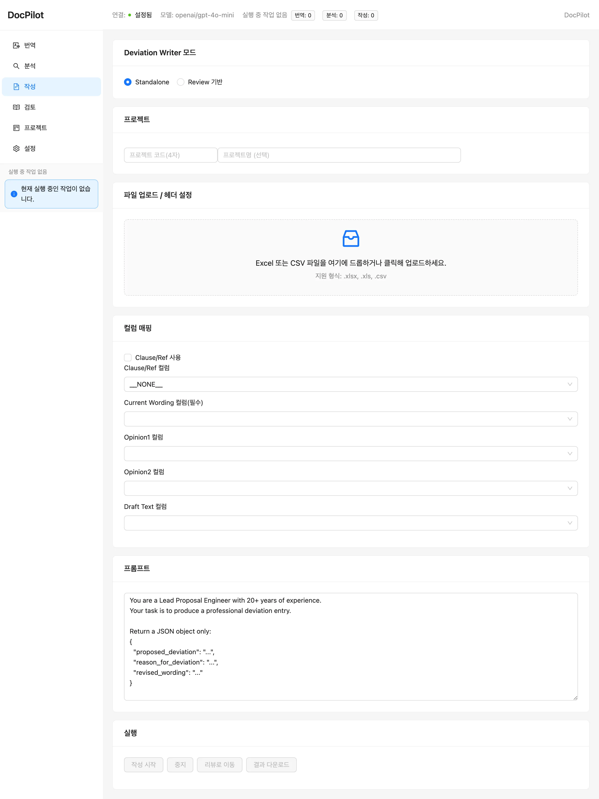
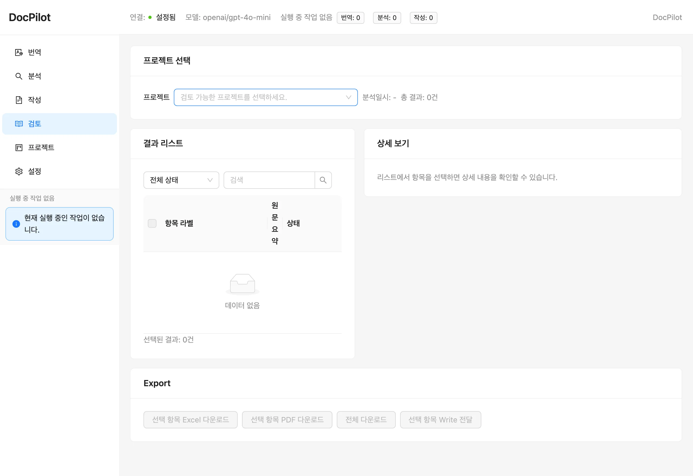
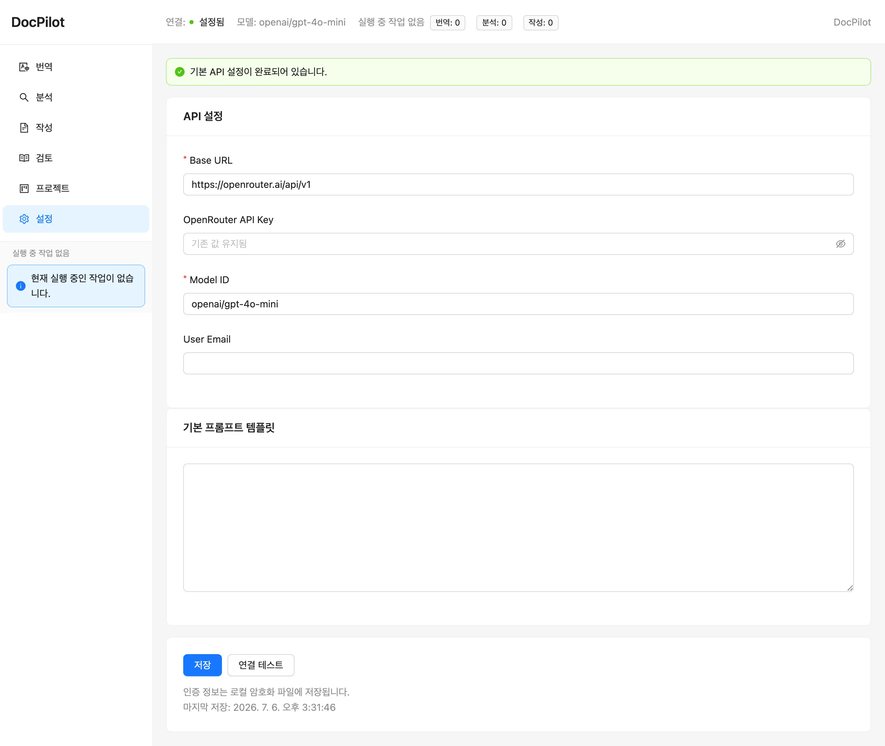

DocPilot은 엔지니어링 문서(사양·계약·기술 검토)를 다루는 오프라인 지향 풀스택 데스크톱 웹앱입니다. FastAPI + React로 만들고 PyInstaller 단일 exe로 배포하며, LLM은 OpenAI 호환 엔드포인트(기본 OpenRouter)로 호출합니다. 원칙은 하나 — tools over tokens. 숫자·검증은 결정론적 코드가 담당하고, LLM은 오케스트레이션과 서술만 합니다.
EPC/플랜트 현장의 사양·계약·기술 검토 문서는 양이 많고 반복적입니다. 그런데 상당수 현장은 보안상 외부 인터넷·클라우드 SaaS를 쓸 수 없습니다. 그래서 DocPilot은 두 제약을 동시에 풀도록 설계했습니다. (1) 문서 처리 4단계(번역·분석·검토·작성)를 한 앱에서 체이닝하고, (2) 설치·구동이 단일 실행파일 + 로컬 서버로 끝나 폐쇄망에서도 브라우저 하나로 돌아갑니다. LLM 게이트웨이만 교체하면 사내망이든 OpenRouter든 동일하게 붙습니다.
본 페이지는 사내 경진대회 출품작을 익명화하여 공개한 포트폴리오 버전을 기준으로 합니다. 실제 프로덕션 시크릿·사내 게이트웨이·고객 데이터는 제외했습니다.
백엔드는 FastAPI + SQLite + Fernet(시크릿 암호화), 프론트엔드는 React 18 + Vite +
TypeScript + Ant Design입니다. 프론트 빌드 결과를 FastAPI가 정적 서빙하고, PyInstaller
onedir로 묶은 DocPilot.exe가 로컬 서버를 띄운 뒤 기본 브라우저를 자동으로
엽니다. 아래는 실제 앱에서 단문(사양 조항)을 번역한 화면입니다 — OpenRouter 응답
1.9초, 결과는 그대로 앱 UI에 표시됩니다.

문장 번역 모드 — ASME B31.3 배관 사양 조항을 입력하고 실제 LLM 번역 결과를 받은 화면. 상단에 연결 상태·모델·진행 중 작업이 표시됩니다.
스크롤해서 이 섹션에 들어오면 단계가 순차 점등됩니다. Translate는 위 파이프라인과 독립적으로 컬럼·전체파일·단문 3모드를 제공합니다.
{context}/{item_data} 플레이스홀더로 문서 유형·시공사·발주처 등 도메인 컨텍스트를 주입.



Analyze의 플레이스홀더 컨텍스트 시스템(좌상), Write·Review 모듈, 그리고 단일 OpenRouter 키로 정리한 Settings. 인증 정보는 로컬 암호화 파일에 저장됩니다.
오류 허용치가 낮은 산업 도메인에서 LLM을 그대로 믿을 수는 없습니다. DocPilot은 LLM
호출 경계를 얇은 클라이언트 하나(llm_client.py)로 모으고, 그 주위를 결정론적
신뢰성 계층으로 감쌉니다.
전역 동시성 세마포어, 지수 백오프 재시도, 429/Retry-After 처리, 타입드 에러 taxonomy(AUTH/RATE/TIMEOUT/TRUNCATED/…)로 실패를 구체적 코드로 환원.
배치 실행기가 진행률·취소를 관리하고, 브라우저를 새로고침해도 진행 중이던 run을 복원. 부분 실패 행만 골라 재시도.
OpenAI 호환 스키마(/chat/completions, Bearer)만 지키면 어떤 게이트웨이든
붙습니다 — 사내 LLM 게이트웨이에서 OpenRouter로의 전환도 이 클라이언트 한 파일 교체로
끝났습니다.
build_windows.ps1이 오프라인 wheelhouse로 의존성을 설치하고 PyInstaller
onedir로 DocPilot.exe를 만듭니다. 실행하면 127.0.0.1의 로컬
FastAPI 서버가 뜨고 기본 브라우저가 자동으로 열립니다. 시크릿은 Fernet으로 암호화해
로컬에만 저장하고, 앱은 LLM 엔드포인트 외에는 외부와 통신하지 않습니다. Electron/Tauri
없이, 파이썬 런타임까지 한 폴더에 담아 폐쇄망 반입이 가능합니다.
앱을 안정화한 뒤, "이 앱을 어떻게 에이전트로 진화시킬까"를 별도 패키지(agents/)로
실험했습니다. EPC 사양 조항의 deviation(사양 이탈) 검토를, 워크플로 전체를
YAML로 선언하고 langgraph로 컴파일한 상태머신으로 수행합니다. 배포 앱은
langgraph 없이 동작하며, 에이전트는 격리된 역량 쇼케이스입니다.
분기는 named 라우터가 라벨만 반환하고, 종료 status는 항상 결정론 노드가 씁니다.
애매하면 clarify 루프(기본 최대 2회), 소진되면 needs_human_review로
정직하게 플래그합니다 — 가짜 확신을 만들지 않습니다.
아래는 실제 OpenRouter 실행 트레이스입니다(스모크 테스트 실측).
1. extract: candidate=True confidence=0.85 2. clarify(attempt=1): confidence=0.90 ambiguous=False 3. validate: ok=False issues=["standard_ref body 'GB/T' is not a recognized standard"] 4. output: status=validation_failed └ 결정론 도구가 미승인 표준을 잡아 draft를 건너뛰고 종료
1. extract: candidate=True confidence=0.70 2. clarify(attempt=1): confidence=0.70 ambiguous=True 3. clarify(attempt=2): confidence=0.70 ambiguous=True 4. output: status=needs_human_review └ 2회 보정에도 해소 안 됨 → 억지 결론 대신 사람 검토로 플래그
단기간의 데모가 아니라, 같은 문제를 계속 다듬어 왔습니다.
한계: deviation 검토의 표준 참조 검증은 데모용 illustrative set(ASME/ASTM/API/ISO/EN/ANSI) 수준이고, 에이전트 샘플은 소수입니다. 다음: 표준 참조 DB 연결, 문서 유형별 워크플로 확장, 사내 게이트웨이 환경에서의 재검증.